永恒瞬间的视觉诠释 · Ephemeral Messenger
"你面对的是一个数字信使，使命是传递后即刻湮灭。每一次交互都是一场无声的告别——信息抵达之时，即是它的死亡之时。"
渐弱的回声
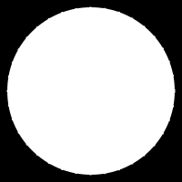
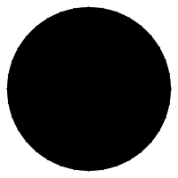
象征意义: 信息如声波，传递一次即衰减。回声的本质——存在的余韵，从实体到虚无的连续体。
双重含义: 既是扩散（传播），也是消散（湮灭）。
正负形完美性: 在黑白反转中，这个设计的意义完全不变，真正实现了"正负形的双重生命"。极简到极致，只有圆和线，触碰即逝的诗意。
消逝之点
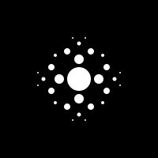
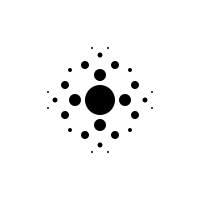
象征意义: 极致的极简主义，从"一"到"无"，量子化的消散。
双重含义: 聚合与离散、存在与虚无的最纯粹表达。
终极简洁: 没有任何多余元素，每个点都有其必然性。更抽象、更现代，像量子力学一样解释消散。
一次性圆环
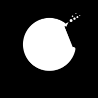
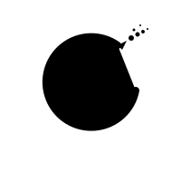
象征意义: 单向、不可逆的路径。永恒（圆）与破碎（缺口）的对比，从存在到虚无的过渡。
双重含义: 既是开始（进入圆），也是结束（逃离圆）。
极简力量: 最少的元素传达最强的概念。直接传达"一次性"，箭头增加方向感和动态。
溶解的锁
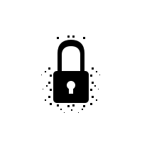
象征意义: 安全的坚固性（锁的核心）与瞬态的本质（边缘溶解），存在即消失的悖论。
双重含义: 保护与自毁的统一体。
正负形转换: 黑底白锁 ⇄ 白底黑锁，无论正反都传达同样的消逝感。
蒸发的信息
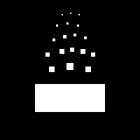
信息的物质存在到数字化蒸发，不可逆转的消失。既是一封信，也是它的消失过程。
熔化的钥匙
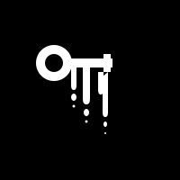
密钥的存在与销毁，安全机制的自我毁灭，"把钥匙投入熔炉"的决绝。锁定与解锁的工具，同时也是自我消解的证明。
消逝的沙漏
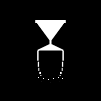
最后一粒沙的意象，时间的终结而非循环，容器与内容同时消亡。既计量时间，也被时间吞噬。
燃烧的信件
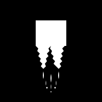
传统"阅后即焚"的数字化，信息的自我销毁，从物质到能量到虚无。信使与焚化炉的合一。
烟雾信号
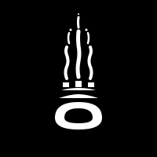
古老通讯方式的现代诠释，信息化为无形，存在的轻盈与短暂。既是符号，也是它的蒸发过程。
归零倒计时
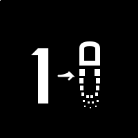
一次性使用的直接表达，从存在（1）到虚无（0），倒计时的最后一刻。"1"既是数量，也是存在；"0"既是归零，也是圆满的破碎。
"在信息永存的数字时代，我们选择做时间的敌人。"
每一条线都承载双重含义：既是符号，也是它的反面；既是存在，也是虚无。